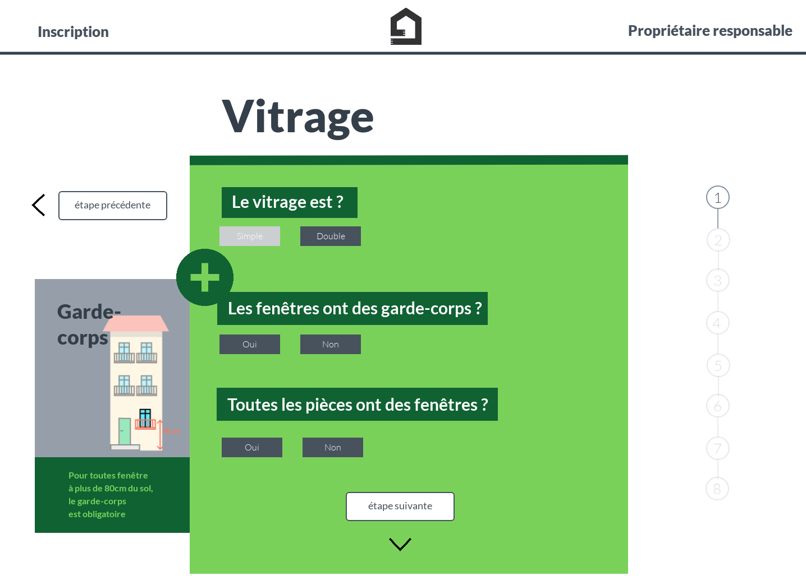

Projet : Participation au Hackathon du 19 janvier 2019 à Marseille lancé par l'association Donut infolab et le journal La Marseillaise. Pendant 48h, nous devions trouver une solution numérique utile pour lutter contre le logement indigne. Cette crise sévit la ville depuis 5 novembre ou deux immeubles du centre-ville se sont effondrés. Cette catastrophe provoqua l'évacuation de 2000 foyers marseillais pour des raisons d'insécurités. Les participants du hackathon se sont répartis en 5 équipes sur divers axes et ont fait émerger des prototypes, présentés devant un jury d'expert à la fin du weekend.

Description :
équipe : Benoît Guigal - Data engineer
Antoine Miceli - Développeur Frontend
Blandine - Graphisme
Le prototype Coach appart est une solution web capable en tant qu'utilisateur d'évaluer la décence de son logement (sous forme d'auto-diagnostic) selon des critères objectifs. Des recommandations s'adapteront suite aux réponses du questionnaire.
Objectif :
Ce projet s'adresse au propriétaire bailleurs peu informés sur les critères de décence et de confort. Certains peuvent être en situation de difficulté financière et dans l'incapacité de réaliser des travaux sans aide. Coach appart souhaite fournir un outil permettant au propriétaire bailleur d'évaluer la conformité de son logement en terme de décence, de prioriser et estimer les travaux à réaliser et faciliter les démarches administratives, financières et une mise en contact avec des artisans locaux pour réaliser les travaux. Ce site vient en prévention, il souhaite rassurer le propriétaire, lutter contre l'anxiété et les logements vacants.
La suite >
Maquettes
Github du projet
Wiki du Hackathon